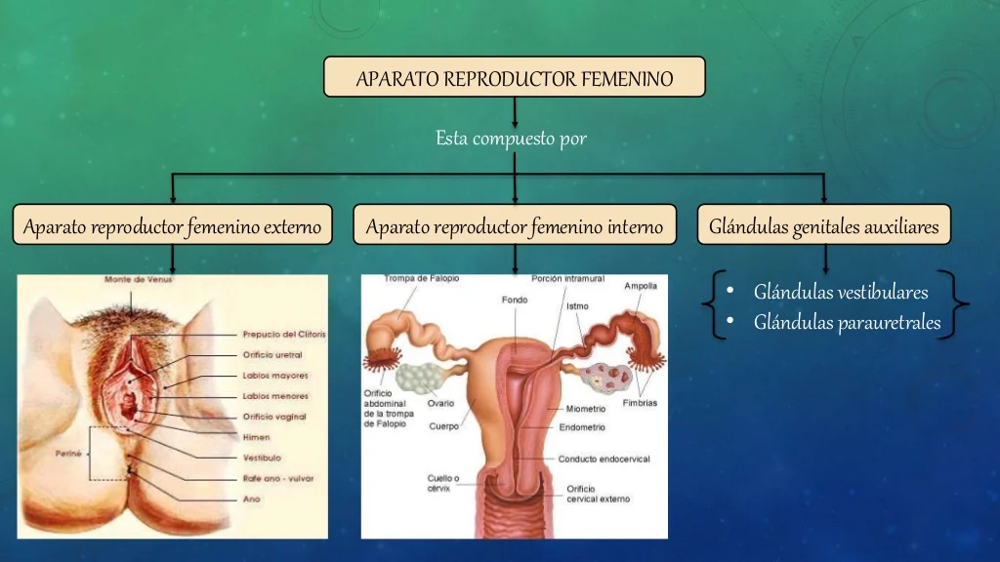
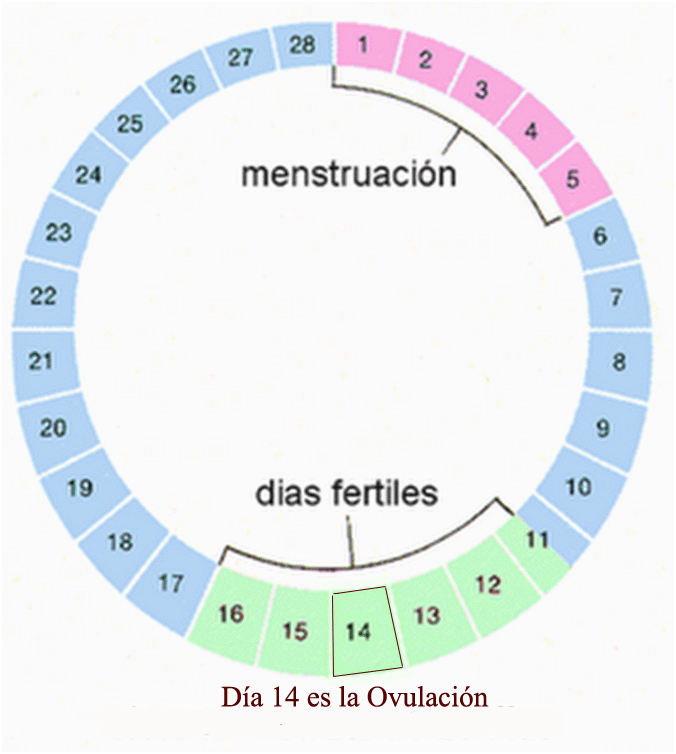
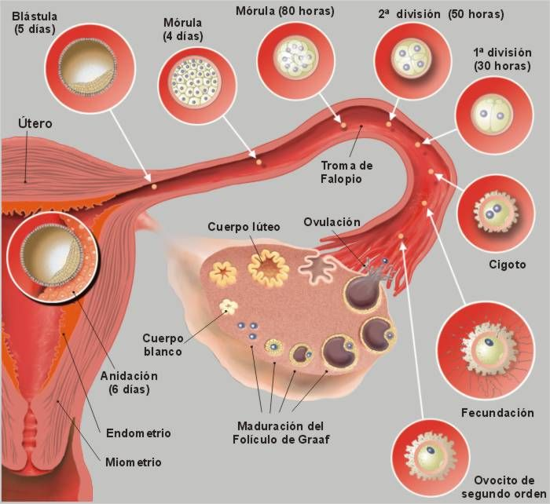

BIOLOGIA
APARATO REPRODUCTOR FEMENINO
¿que es?
El aparato reproductor femenino es el conjunto de órganos y estructuras en el cuerpo de una mujer que le
permiten tener hijos. Se divide en partes internas y externas.
Partes Externas:
vulva:
Es la parte visible del aparato reproductor femenino
incluye:
Labios mayores y menores
: Pliegues de piel que protegen las partes internas.
clitoris
Un pequeño órgano muy sensible.
via urinaria
Por donde sale la orina.
alvergura vaginal
La entrada a la vagina.
Vagina
: Un canal que conecta el exterior con el útero. Es por donde sale el flujo menstrual y por
donde nace el bebé.
Útero:
Un órgano donde se desarrolla el bebé durante el embarazo.
Trompas de Falopio:
Tubos que conectan los ovarios con el útero y donde se encuentra el óvulo con
el
espermatozoide.
Trompas de Falopio:
Dos glándulas que producen los óvulos y hormonas importantes.
Funciones:

Reproducción:
Permite la creación de un bebé al producir óvulos, facilitar la fertilización y
albergar al
feto durante el embarazo.
Ciclo Menstrual:
Un ciclo mensual que prepara el cuerpo para un posible embarazo.
Hormonal:
Produce hormonas que son importantes para el desarrollo sexual y la regulación del ciclo
menstrual.
OVULACIÓN
¿que es?
La ovulación es el proceso en el ciclo menstrual de una mujer en el que uno de sus ovarios libera un
óvulo maduro. Este evento ocurre aproximadamente a mitad del ciclo menstrual, alrededor del día 14 en un
ciclo promedio de 28 días, aunque esto puede variar de una mujer a otra.

Pasos de la Ovulación:
Desarrollo del Óvulo:
Al comienzo del ciclo menstrual, varios óvulos comienzan a madurar en los
ovarios. Este proceso es estimulado por las hormonas.
Selección del Óvulo Dominante:
De todos los óvulos en desarrollo, generalmente solo uno madura
completamente.
Liberación del Óvulo:
Este óvulo maduro se libera del ovario y es capturado por la trompa de
Falopio, donde puede encontrarse con un espermatozoide y ser fertilizado.
Desplazamiento del Óvulo:
El óvulo viaja a través de la trompa de Falopio hacia el útero. Si no es
fertilizado, se desintegra y es expulsado del cuerpo durante la menstruación.
Importancia de la Ovulación:

Reproducción:
La ovulación es esencial para que una mujer pueda quedar embarazada. Durante este
período, el óvulo está disponible para ser fertilizado por un espermatozoide.
Ciclo Menstrual:
La ovulación es una parte crucial del ciclo menstrual y está acompañada por
cambios hormonales que preparan el cuerpo para un posible embarazo
Salud Reproductiva:
La regularidad de la ovulación puede ser un indicador de la salud reproductiva
de una mujer.
sintomas
Cambios en el moco cervical:
El moco se vuelve más claro y resbaladizo, similar a la clara de
huevo, lo que facilita el paso de los espermatozoides.
Aumento de la temperatura corporal basal:
La temperatura del cuerpo puede subir ligeramente después
de la ovulación.
Dolor abdominal leve:
Algunas mujeres pueden sentir un ligero dolor o molestia en uno de los lados
del abdomen, conocido como "mittelschmerz".
creditos a CHAT GPT
no copiamos todo de esa IA pero si nos ayudo bastante entendiendo